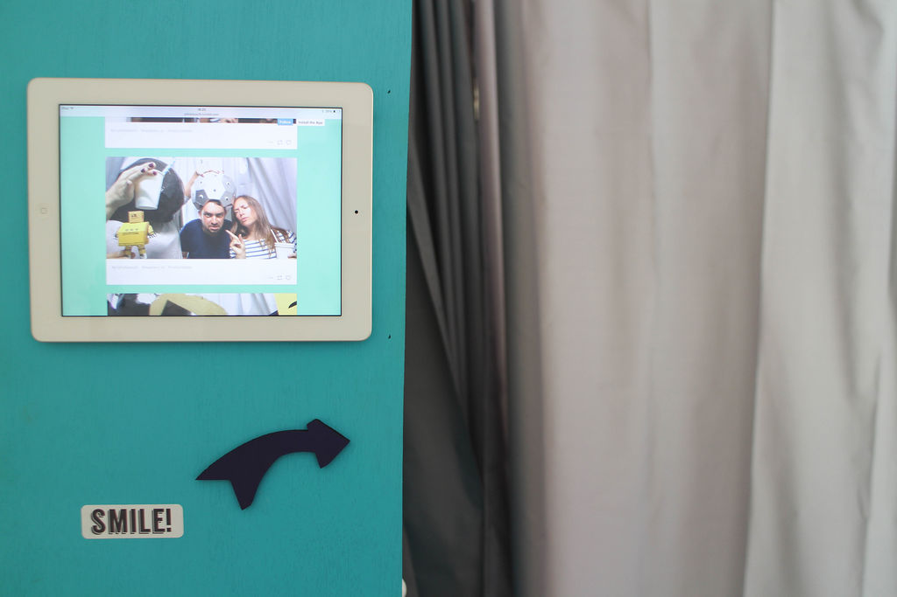

how to interfacing raspberry pi with arduino mega 2560 with pin specification circuitry to understand better and proceed for my project thank you from Abdullah to Ms.lara the angel
- Featured:


The Raspberry Pi is a powerful platform in one small package. So, where do you start? In this class, we will begin with the basics such as how to connect accessories to the RPi and how to navigate the RPi’s software. You will also get an introduction to Linux and Python and how to use them to control the RPi. Throughout this class, you will build an interactive photo booth that you can customize along with other exercises.
A Raspberry Pi board is what you will learn to use in this class. So, what is it and where did it come from? The Raspberry Pi is a small, inexpensive, and programmable computer created by the Raspberry Pi Foundation. One of the foundation's co-founders, Eben Upton, has this to say about the Raspberry Pi board's creation:
“When we started Raspberry Pi, we had a simple goal: to increase the number of people applying to study Computer Science at Cambridge. By putting cheap, programmable computers in the hands of the right young people, we hoped that we might revive some of the sense of excitement about computing that we had back in the 1980s with our Sinclair Spectrums, BBC Micros and Commodore 64s.” This snippet is quoted from a recent post Eben made in celebration of the ten-millionth RPi being sold and the announcement of a new kit.
In simplest terms, the Raspberry Pi 3 is a computer. It's also an educational tool that has grown to be loved by all kinds of people with all levels of skill. Like a personal computer, an RPi can have a screen for output and a mouse and keyboard for user input. It runs an operating system like Mac's OSX and Microsoft's Windows 10. You can download applications to it like a word processor or play games on it like Minecraft. Although it does all these perfectly useful but also ordinary things, the real magic is when it's used for unexpected purposes. Once you understand how it works you will be ready to NOT think about it as just a computer but as something else entirely. :)
The name Raspberry Pi itself gives a sneak peak into what the board is about. When asked about the origin of the name Eben Upton has stated that it follows a long line of naming computer companies and products after fruit. That’s how the Raspberry half was born. The Pi half comes from Python, a programming language you will use in this class. To read more about the origin of the Raspberry Pi check out this 2012 Interview with Eben on TechSpot.
Assumptions Made About You, the Student
What This Class Is and What it Is Not
Raspberry Pis can be used to power robots, they can be strung together to create digital networks, and they have even been sent to near space. So, there is no mistaking that there is a lot one can do with a Raspberry Pi board. This class touches upon the tips of mountain-sized topics and then gives resources to go further with. The goal is for you to have a base understanding of how the board works and explore some things it is capable of. You will be introduced to computer-world concepts and learn through hands-on coding and a little circuit building.
This class uses the Raspberry Pi 3 which is the most recently released Pi as of August 2016.
As you progress through the class, there will be several small exercises to get you accustom to navigating software and programming. Some of which will contribute to the larger final project which is a photo booth!
The booth can take single images or GIFs. It can be a full-size booth or a small portable box you can carry with to parties. The "booth" design is up to you. I will share with you how I built mine but mainly you will focus on how to write the program, build the circuit, access the camera, and all the other technical tidbits that involve the Raspberry Pi. After a picture is taken, the Raspberry Pi uses its awesome power of WiFi to upload it to a Tumblr account. This way guests can look through all the previous images and be able to revisit and download them all as long as the account is still active.

Hi, I'm Lara and I will be the one guiding you through your adventures with the RPi. I enjoy building fun, weird, expressive, and semi-practical things using technology. You can see some of my projects on my Instructables profile.
I am constantly amazed by how computing technology is getting more affordable and smaller. I believe being educated in how to use this technology is empowering. So, I enjoying sharing all I've learned with others and am constantly learning new things from like-minded folk. If you have any questions or want to share something you have created that involves topics discussed in this class please post it in the comment and question section below. I look forward to hearing from you!

© 2016 Autodesk, Inc.

{kind=link}
CLASS PROJECT
Share a photo of your finished project with the class!
Nice work! You've completed the class project